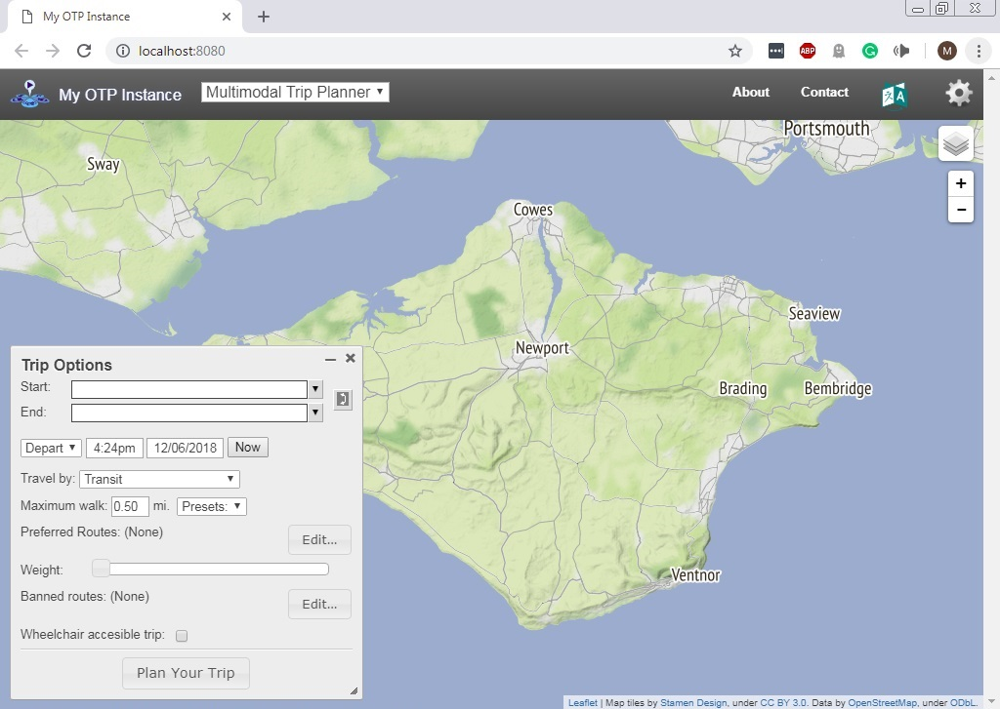

opentripplanner: getting started
Marcus Young, modified by Malcolm Morgan and Robin Lovelace
2021-07-21
Source:vignettes/opentripplanner.Rmd
opentripplanner.RmdIntroduction
This vignette is an introduction to OpenTripPlanner (OTP) - an open-source and cross-platform multi-modal route planner written in Java. It uses imported OpenStreetMap (OSM) data for routing on the street and path network and supports multi-agency public transport routing through imported General Transit Feed Specification (GTFS) feeds. It can also apply a digital elevation model to the OSM street network, allowing, for example, cycle-friendly routes to be requested. OTP has a web front-end that can be used by end-users and a sophisticated routing API.
OTP works worldwide as long as there is OSM map coverage in the area. Support for transit timetables and elevation calculations are dependant on the available data. For more information on getting data see the getting data for OTP section.
A significant advantage of running your own multi-modal route planner is the ability to carry out analysis using amended transport data. Services such as Google Maps or TransportAPI are based on current public transport schedules and the existing road network. OTP enables you to modify transit schedules and/or make changes to the underlying street network. By editing a local copy of OSM, you can model the effects of opening new roads, closing roads or imposing other restrictions. You can also look back in time. For example, you might want to examine the effect of reductions in rural bus services on the accessibility of health facilities. To do this, you would need a network with bus schedules as they were in previous years.
Prerequisites
You will need to have installed R, RStudio, and Java 8. For more details on the required software, see the prerequisites vignette included with this package.
Installation
Install the stable version of the package from CRAN as follows:
install.packages("opentripplanner") # Install Package
library(opentripplanner) # Load PackageOr you can install the development version from GitHub using the remotes package:
remotes::install_github("ropensci/opentripplanner") # Install Package
library(opentripplanner) # Load PackageDownloading OTP and the demonstration data
We will build an example graph for the Isle of Wight using some example data provided for the package. A graph is what OTP uses to find routes, and must be built out of the raw data provided. Please note the demo data has been modified for teaching purposes and should not be used for analysis.
Creating a folder to store OTP and its data
OTP expects its data to be stored in a specific structure, see building your own otp graph for more details. We will make a folder called OTP in the temporary directory.
path_data <- file.path(tempdir(), "OTP")
dir.create(path_data) You may wish to change this to keep your files after closing R. Otherwise you will need to download your files and build your graph every time. For example:
path_data <- file.path("C:/Users/Public", "OTP")
dir.create(path_data) Downloading OTP
As of version 0.3 the otp_dl_jar function will download and cache the OTP jar file. So you can simply get the path to the OTP JAR file like this:
path_otp <- otp_dl_jar()otp_dl_jar will first check its internal cache for the JAR file and only download it if it is unavailable.
If you wish to specify the location the JAR file is saved (as in version 0.2) use:
path_otp <- otp_dl_jar(path_data, cache = FALSE)Downloading Example Data
The otp_dl_demo function downloads the demonstration data and puts it in the correct structure.
otp_dl_demo(path_data)Building an OTP Graph
Now we can build the graph. This code will create a new file Graph.obj that will be saved in the location defined by path_data.
log1 <- otp_build_graph(otp = path_otp, dir = path_data) By default, R will assign OTP 2GB of memory to build the graph. For larger areas, you may need more memory. You can use the memory argument to set the memory allocation in MB. For example, to allocate 10GB, you would use:
log1 <- otp_build_graph(otp = path_otp, dir = path_data, memory = 10240) Note that you cannot allocate more memory than you have RAM, and if you use 32 Bit Java you cannot allocate more than 3GB. It is possible to run OTP in just 1GB of memory for very small areas (including the demo dataset).
Launch OTP and load the graph
The next step is to start up your OTP server, running the router called ‘default’. OTP will load the graph you created into memory, and you will then be able to plan multi-modal routes using the web interface. Run the following command:
log2 <- otp_setup(otp = path_otp, dir = path_data)OTP has a built-in web server called Grizzly which runs on port 8080 (http) and 8081 (https). If you have another application running on your computer that uses these ports then you will need to specify alternative ports using the port and securePort options, for example:
log2 <- otp_setup(otp = path_otp, dir = path_data, port = 8801, securePort = 8802)It should only take a minute or two for OTP to load the graph and start the Grizzly server. If it has worked, you should see the message: OTP is ready to use, and R will open your web browser at the OTP.
You can also access the web interface using the URL: http://localhost:8080. You can now zoom into the Isle of Wight area and request a route by setting an origin and a destination directly on the map (by right-clicking your mouse). You can specify travel dates, times and modes using the ‘Trip Options’ window (see Figure ). You can change the background map from the layer stack icon at the top right.

OTP Web Interface
Note: The web interface does not work correctly in Internet Explorer - use Firefox or Chrome.
Connecting to the OTP from R
Now you have the OTP running on your computer you can let R connect to the OTP. otp_connect() creates an OTP connection object which will allow R to connect to the OTP. By default, your local timezone is used, but if you are not in the UK, you need to specify the UK timezone to get the correct results with the demo data.
otpcon <- otp_connect(timezone = "Europe/London")The connection is created and tested, and a message will be returned, saying if the connection exists or not. If you have not used the default settings, such as a different port you can specify those settings in otp_connect().
otpcon <- otp_connect(hostname = "localhost",
router = "default",
port = 8801)You can also use the otp_connect() function to make a connection to OTP on a remote server, for example digitransit run an OTP server for Finland. See their documentation for more details. Digitransit use a non-standard URL structure for their API, so we provide the full URL directly to otp_connect(). See the otp_connect() help for more details.
otpcon <- otp_connect(url = "https://api.digitransit.fi/routing/v1/routers/hsl")Running an OTP instance in Docker
We have been able to run OTP version 1.5.0 from https://repo1.maven.org/maven2/org/opentripplanner/otp/ in a Dockerfile and query it via the package. The basic Dockerfile looks like:
FROM java:8-alpine
ENV OTP_VERSION=1.5.0
ENV JAVA_OPTIONS=-Xmx1G
ADD https://repo1.maven.org/maven2/org/opentripplanner/otp/$OTP_VERSION/otp-$OTP_VERSION-shaded.jar /usr/local/share/java/otp.jar
COPY otp /usr/local/bin/
EXPOSE 8080
ENTRYPOINT ["otp"]
CMD ["--help"]And then you can build the image using a default Docker build command like docker build -t <name> . where of course “.” is your working directory with your Dockerfile in. Then just running the instance like
docker run \
-p 8080:8080 \
-v $PWD/graphs:/var/otp/graphs \
-e JAVA_OPTIONS=-Xmx4G \
urbica/otp --server --autoScan --verboseThat of course let us place our graphs in the docker volume $PWD/graphs. This is slightly edited version of the work described here.
Getting a route from the OTP
Now we can use R to get a route from the OTP. OTP accepts pairs of longitude/latitude coordinates for a fromPlace (start of the journey) and toPlace (end of the journey).
If you have the tmap package installed, you can view the route using.
# install.packages("tmap") # Only needed if you don't have tmap
library(tmap) # Load the tmap package
tmap_mode("view") # Set tmap to interactive viewing
qtm(route) # Plot the route on a mapStopping the OTP
As the OTP is running in Java, it will continue to run after you close R.
You can stop the OTP running using the command. NOTE: This will stop all running JAVA applications!
otp_stop()Congratulations, you now have your own multi-modal router planner!
Building your own OTP Graph
If you want to build your own graph for a different location, follow these steps, and change your path_data variable to the folder with your data.
An OTP graph specifies every location in the region covered and how to travel between them, and is compiled by OTP using OSM data for the street and path network (used for walking, bicycle, and drive modes) and GTFS data for transit scheduling.
Our first task is to create the folder and file structure expected by OTP. This is a base directory called otp which contains a sub-directory called graphs. Directories created under graphs are known as OTP routers and contain all the files required to build a graph. A single OTP instance can host several routers, for example, covering different regions.
The basic file structure is shown below.
/ otp # Your top folder for storing all OTP data
/graphs
/default # Subfolder with the name of the router
osm.pbf # Required OSM road map
router-config.json # Optional config file
build-config.json # Optional config file
gtfs.zip # Optional GTFS data
dem.tif # Optional Elevation data
router-config.json is read when the OTP server is started, while build-config.json is read during the graph building stage. For more information on the config files, see the advanced features vignette.
Multiple Routers
OTP supports multiple routes by having them in separate folders. For example:
/ otp # Your top folder for storing all OTP data
/graphs
/london # router called london
osm.pbf # map of London
/manchester # router called manchester
osm.pbf # map of ManchesterHaving multiple routers may be useful to support different regions, or different scenarios, e.g. past, present, future.
Each router requires its own graph via otp_build_graph() but only one version of the OTP jar files is needed (i.e. otp_dl_jar()) Each route must be started via otp_setup() before use. While it is technically possible to run multiple routers simultaneously, it is not recommended for performance reasons.
Getting Data for OTP
To use OTP on your local computer, you will need data about your location of interest, such as where the roads are, what is the public transport timetable etc.
Road Map Data
OTP uses road maps from the Open Street Map (OSM) in the .osm or .pbf format. OSM is a free map that anybody can edit. You can download all or part of the OSM from Geofabrik.
Note that OTP only really needs the road network from the OSM, but the Geofabrik downloads include non-road data such as buildings, parks, water etc. So for large areas, you may wish to remove unneeded data from the file before building the graph. You can do this using osmconvert and osmfilter. These are command-line utilities for editing large OSM files and are documented on the OSM Wiki. For small areas (e.g. city scale) this is not necessary.
Public Transport Timetables
OTP can use public transport timetable data in the GTFS format. You can find GTFS data for many regions at transitland. For users in the UK see UK2GTFS
Elevation Data
You can add terrain information to your routes, especially useful for walking and cycling, using GeoTIFF images. You can find worldwide elevation data from NASA.
Warning It is common for GeoTIFF to have a no data value often the maximum possible value. OTP can misinterpret this as an elevation value. So set your no data values in your elevation data to something more plausible like 0.
Note that OTP does not support all types of GeoTIFF compression so you may have to change the compression type of the image if you are experiencing problems.